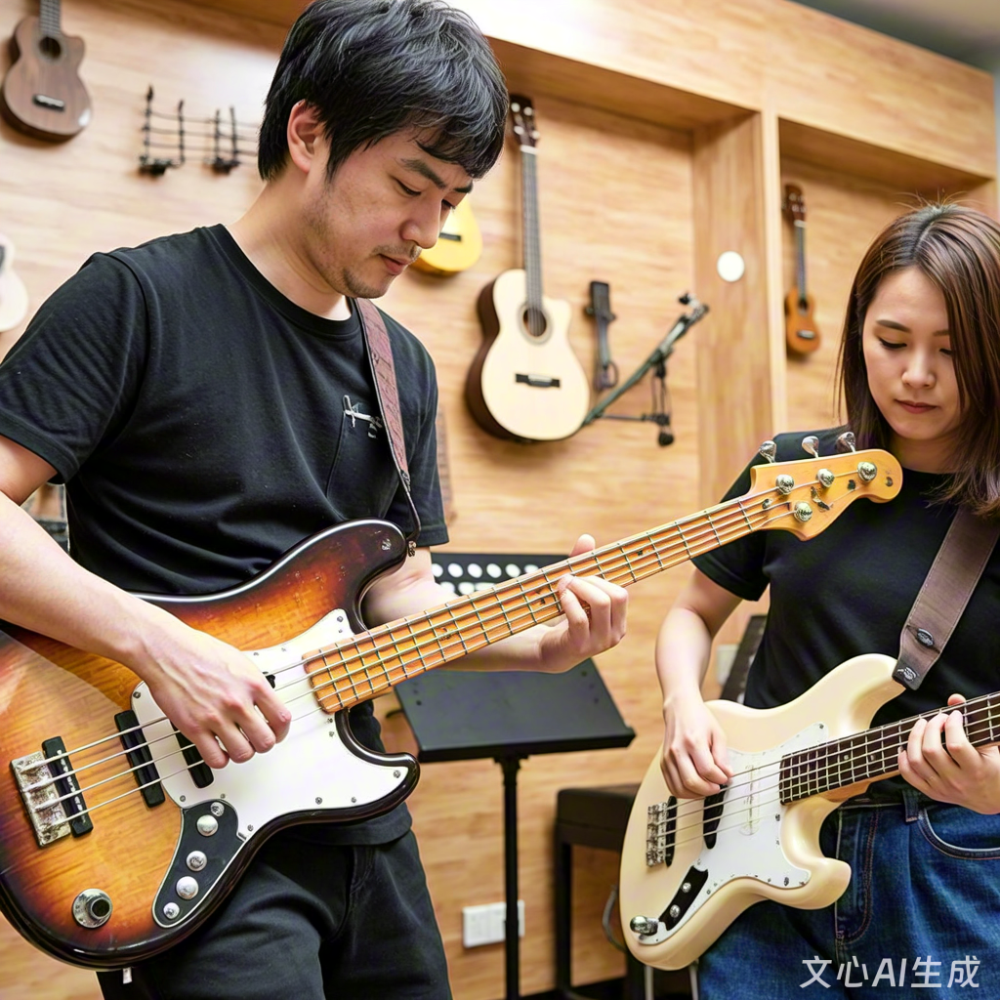

社团简介 | 活动安排 | 风采展示 | 社员故事 | 在线报名
贝斯社，作为校园音乐文化的重要载体，自成立之初便以“传承贝斯艺术、培育音乐人才、丰富校园文化”为宗旨， 致力于打造一个集教学、创作、演出于一体的综合性音乐社团。 历经多年发展，贝斯社已成为校园内最具影响力的音乐社团之一， 其成长轨迹与活动成果，深刻体现了青年学子对音乐艺术的执着追求与创新精神。
贝斯社成立于2010年，由一群热爱贝斯演奏的音乐爱好者发起。 最初以小型乐器兴趣小组形式存在，后逐步发展为拥有完善组织架构的正规社团。 社团下设教学部、演出部、创作部三大核心部门：教学部负责基础课程开发与一对一指导， 涵盖民谣吉他、电吉他、贝斯、架子鼓等多类乐器；演出部统筹校内外演出活动， 包括专场音乐会、校庆表演、社区公益演出等；创作部则聚焦原创音乐开发， 鼓励成员融合爵士、摇滚、流行等多元风格进行创作。目前，社团拥有注册成员200余人， 配备专业指导教师3名，并形成“老带新”的梯队培养模式，确保技艺传承的连续性。
社团活动呈现多元化特征，形成“基础教学—实践演出—创新创作”的闭环体系。 日常教学中，采用“理论+实操”结合模式，每周固定开展乐器基础课、乐理知识讲座及即兴演奏工作坊。 例如，在贝斯专项课程中，学员需掌握从持琴姿势、拨弦技巧到复杂节奏型练习的全流程技能， 并通过“6321-5321-4321”等标准化训练体系夯实基础。演出方面，每学期举办“贝斯之夜”专场音乐会， 以器乐独奏、重奏及乐队合奏形式展现成员技艺；同时参与校级钢琴交流赛、艺术节开幕式等大型活动， 积累舞台经验。原创方面，社团鼓励成员参与音乐创作比赛， 曾推出融合电子音乐元素的实验性作品，并在校内外引发广泛关注。
社团成员通过系统训练与实践，在专业技能与综合素质上实现双重提升。 多名成员在省市级器乐比赛中获奖，部分优秀学员更获得专业音乐院校深造机会。 在团队协作中，成员不仅提升演奏水平，更培养了项目策划、舞台表现及跨文化交流能力。 社会影响层面，贝斯社通过公益演出、社区音乐工作坊等形式，将音乐艺术带入社区， 曾联合非遗竹篾社团开展“音乐与手工艺”跨界活动，吸引数百名市民参与。 此外，社团积极推动音乐数字化创新，引入MIDI制作、音频编辑等技术课程， 培养兼具传统器乐功底与现代音乐制作能力的复合型人才。
面向未来，贝斯社将以“专业化、国际化、数字化”为发展方向， 计划引入AI音乐生成、虚拟现实音乐会等前沿技术，打造沉浸式音乐体验空间。 同时，社团拟加强与国内外音乐院校、专业乐团的交流合作，定期举办国际音乐营、大师班等活动， 拓宽成员视野。在社会责任层面，将持续深化“音乐+公益”模式，通过音乐疗愈、特殊群体音乐教育等项目， 践行艺术服务社会的使命。正如社团成员所言：“贝斯不仅是乐器，更是连接人心、传递情感的桥梁。” 贝斯社将始终秉持初心，在传承与创新中书写属于新时代的音乐篇章。
为了让大家更好地了解贝斯社的日常，本学期计划安排如下几项主要活动。 具体时间可能会根据学校统一安排略作调整，详情请关注社团通知。
| 贝斯社 2025 年春季学期活动安排表 | |||
|---|---|---|---|
| 活动名称 | 活动时间 | 活动地点 | 负责人 |
| 新成员见面会 | 3 月第 2 周 周五晚 | 学生活动中心 音乐教室 A301 | 李强 |
| 贝斯基础教学公开课 | 3 月第 3 周 周六下午 | 李娜 | |
| 校园草地演奏会 | 4 月第 2 周 周日 | 操场东侧草坪 | 王浩 |
| 期末专场音乐会 | 6 月第 1 周 周六晚 | 大学生活动中心 大礼堂 | 刘芳 |
上表仅列出了部分代表性活动，日常还会有小型即兴合奏、经验分享等活动， 欢迎有想法、有创意的同学参与策划。
下面是一张往届校园音乐会的照片示意。点击图片，可以查看更详细的活动介绍页面。
图中为上学期“夏日之声”校园音乐会上，贝斯社成员的集体演出场景。 平时的训练与排练，都会在正式演出中得到充分的展示机会。
在校园缤纷多彩的社团版图里，“低音部落”宛如一颗隐匿于繁星间的独特星辰， 散发着低调却无法抗拒的魅力。这里，是一群钟情低音、痴迷贝斯的年轻人汇聚的港湾， 每一个日常故事都似灵动的音符，交织成一曲动人的青春交响诗。
苏然，一个怀揣着音乐梦想、眼神中闪烁着好奇光芒的新生， 在人群中穿梭时，一眼就被这几把贝斯吸引住了。她停下脚步，缓缓走近， 目光紧紧地锁住那些贝斯，像是被一种无形的力量牵引着。她轻轻伸出手， 指尖触碰到琴身的瞬间，一种奇妙的感觉涌上心头， 那细腻的纹理、冰凉的触感，仿佛在传递着一种神秘的信息。
这时，“低音部落”的社长走了过来，他脸上带着温和的笑容， 眼神中透露出对贝斯的热爱与执着。他开始耐心地向苏然介绍贝斯的特点和魅力： “贝斯就像音乐的基石，它不像吉他那样张扬夺目， 却能在不经意间为整个音乐注入深沉而稳定的灵魂。每一个音符从它身上流淌出来， 都带着一种独特的韵味。”社长的话语如同春风， 轻轻拂过苏然的心田，在她心中种下了一颗好奇与憧憬的种子。
从最基础的指法练习开始，苏然就感受到了前所未有的困难。 她的手指总是不听使唤，按弦的力度时大时小，节奏也总是把握不准。 看着其他成员熟练而流畅的演奏，她的心里不禁涌起一阵焦急和沮丧。 但是，社团里的前辈们并没有丝毫的嘲笑或不耐烦，他们纷纷围过来， 耐心地给苏然指导。一位前辈轻轻地握住苏然的手，示范着正确的按弦姿势和力度， 一边操作一边讲解：“按弦的时候要用力均匀，不能太轻也不能太重， 这样才能弹出清晰而饱满的音符。”另一位前辈则在一旁打着节拍，帮助苏然掌握节奏： “注意听这个节拍，跟着它的韵律来弹奏，慢慢就会找到感觉了。”
在大家的鼓励和帮助下，苏然开始日夜刻苦练习。 课余时间，当其他同学在休息娱乐时，她却独自坐在宿舍里， 一遍又一遍地重复着指法练习。手指磨出了茧子，疼痛难忍，但她从未想过放弃。 因为她知道，只有通过不断地努力和坚持，才能在这个充满挑战的音乐世界里站稳脚跟。
有一次，苏然在练习时不小心扭伤了手腕，疼得她脸色苍白，几乎无法继续弹奏。 得知这个消息后，社团里的成员们纷纷放下手中的事情，赶来关心她。 有的成员急忙跑去校医室为她买药，有的成员帮她整理学习笔记和社团资料， 还有的成员主动提出要帮她完成一些社团的任务。 在大家的悉心照料下，苏然的手腕很快就好了起来。 她感动地看着大家，心中充满了温暖和感激。
如今，苏然已经成为“低音部落”的核心成员之一。 她用自己的经历和热情，向身边的同学介绍着这个充满爱与音乐的社团。 她希望更多的人能加入“低音部落”，一起在贝斯的世界里探索音乐的奥秘， 奏响属于自己的青春乐章。如果你也热爱音乐，钟情于那深沉而迷人的低音， 那么不妨走进“低音部落”，开启一段充满惊喜与感动的音乐之旅吧！
请认真填写以下信息，确保联系方式准确无误。 提交后，社团会通过电话或短信的方式通知面谈或试音时间。
提交表单后，如需修改信息，可以再次填写并提交最新的一份。